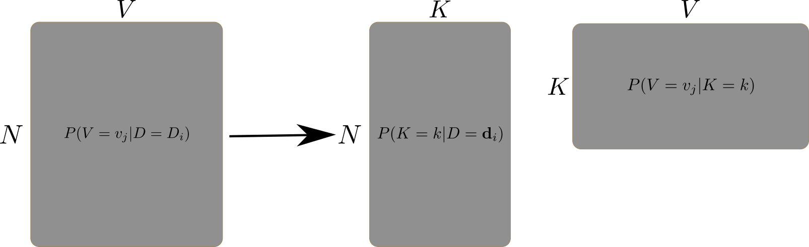

Lab 04.03.2: Variational Neural Topic Modeling
Contents
# init repo notebook
!git clone https://github.com/rramosp/ppdl.git > /dev/null 2> /dev/null
!mv -n ppdl/content/init.py ppdl/content/local . 2> /dev/null
!pip install -r ppdl/content/requirements.txt > /dev/null
Lab 04.03.2: Variational Neural Topic Modeling¶
## Ignore this cell
!pip install ppdl==0.1.5 rlxmoocapi==0.1.0 --quiet
import inspect
import nltk, re
import tensorflow as tf
import tensorflow_probability as tfp
from rlxmoocapi import submit, session
from tensorflow.keras.models import Model
from tensorflow.keras.layers import Dense, Input, Layer
from tensorflow.keras.initializers import GlorotNormal
from sklearn.datasets import fetch_20newsgroups
from sklearn.feature_extraction.text import CountVectorizer
from nltk.corpus import stopwords
from tqdm import tqdm
tfd = tfp.distributions
tfb = tfp.bijectors
tfpl = tfp.layers
nltk.download("popular")
Topic Models¶
In this lab, we will use a neural network for variational topic modeling. First, let us introduce a general topic model:

Where:
\(N\) is the number of documents in the corpus.
\(V\) is the vocabulary size.
\(K\) is the number of topics.
\(P(V=v_j|D=d_i)\) is the probability of word \(v_j\) in document \(d_i\) (a Bag-of-Words representation).
\(P(K=k|D=d_i)\) is the probability of topic \(k\) in document \(d_i\).
\(P(V=v_j|K=k)\) is the probability of document \(d_i\) belonging to topic \(k\).
In this case, we will use a probabilistic encoder-decoder neural network to approximate \(P(K=k|D=d_i)\) and \(P(V=v_j|K=k)\).
First, let us load the 20 newsgroups dataset:
newsgroups = fetch_20newsgroups(subset="test")
corpus, labels = newsgroups.data, newsgroups.target
Let us preprocess the data:
def preprocess_doc(doc):
"""
preprocess a document.
"""
lower_doc = doc.lower()
clean_doc = re.sub(r"[^a-z]", " ", lower_doc)
clean_doc = re.sub(r"\s+", " ", clean_doc)
tokens = clean_doc.split(" ")
sw = stopwords.words("english")
filtered_tokens = filter(
lambda token: token not in sw,
tokens
)
return " ".join(filtered_tokens)
preprocessed_corpus = list(map(preprocess_doc, tqdm(corpus)))
print(preprocessed_corpus[:5])
The BoW representation of the documents is a matrix of size \(N \times V\):
bow = (
CountVectorizer(min_df=50)
.fit(preprocessed_corpus)
)
X = (
bow
.transform(preprocessed_corpus)
.toarray()
)
vocab = bow.get_feature_names_out()
print(X.shape)
Task 1:¶
Implement the Encoder class that takes the BoW of a document (\(P(V=v_j|D=d_i)\)) as input and outputs a probability distribution over topics (\(P(K=k|D=d_i)\)), you must:
Implement the constructor, adding the
Denselayers that you will need.Implement the
callmethod to connect the input and the layers, and return the output of the last layer.The last layer must be a
Denselayer with aclipped_softplusactivation withn_topicsunits.
def clipped_softplus(x):
return tf.clip_by_value(tf.nn.softplus(x), .1, 1e3)
The following DecodingLayer class is used to decode the topics distributions into a BoW representation.
Task 2:¶
Implement the prior function to describe the prior distribution of the topics.
You must:
Create a constant tensor of shape
(1, n_topics)with theinit_valUse a
Softplusbijetor to transform the constant tensor.Create a
Dirichletdistribution with the bijector result as concentration.
The following model uses a prior distribution, the Encoder and the DecodingLayer to build the variational neural topic model.
class NeuralTopicModel:
def __init__(
self,
prior_dist,
n_topics=20,
hidden_layers=(256, 256),
activation="relu",
vocab_size=10000,
):
self.prior_dist = prior_dist
self.n_topics = n_topics
self.hidden_layers = hidden_layers
self.activation = activation
self.vocab_size = vocab_size
def build(self, elbo, optimizer="adam"):
input = Input(shape=(len(vocab),))
encoded = Encoder(
n_topics=self.n_topics,
hidden_layers=self.hidden_layers,
activation=self.activation
)(input)
topics_layer = tfpl.DistributionLambda(
lambda x: tfd.Dirichlet(x),
convert_to_tensor_fn=lambda x: x.sample()
)(encoded)
decoded = DecodingLayer(
n_topics=self.n_topics,
vocab_size=self.vocab_size,
)(topics_layer)
self.topics_dist = tfd.Dirichlet(
concentration=encoded
)
self.rec_dist = tfd.OneHotCategorical(
probs=decoded
)
self.rec_model = Model(inputs=input, outputs=decoded)
self.encoder = Model(inputs=input, outputs=encoded)
loss = -elbo(
input, self.topics_dist, self.rec_dist,
self.prior_dist
)
self.rec_model.add_loss(loss)
self.rec_model.compile(optimizer=optimizer)
return self
def train(self, counts, epochs=10, batch_size=32):
self.rec_model.fit(
counts,
epochs=epochs,
batch_size=batch_size
)
return self
def get_topics_dist(self, X):
params = self.encoder.predict(X)
dist = tfd.Dirichlet(concentration=params)
return dist
def get_topics_words(self, X):
return self.rec_model.layers[3].get_topic_words()
Task 3:¶
The build method of the NeuralTopicModel, uses the elbo function, for our model it’s given by:
mean(log_prob(X) - kl(prior || topics_posterior))
Where:
Xis the BoW representation of the document.topics_posterioris the posterior distribution of the topics (encoder distribution output).rec_distis the distribution of the reconstruction of the document (decoder distribution output).prioris the prior distribution of the topics.
Let us train the model
# hyperparameters
N_TOPICS = 20
HIDDEN_LAYERS = (256, 256)
ACTIVATION = "relu"
prior_dist = prior(n_topics=N_TOPICS, init_val=2.0)
model = (
NeuralTopicModel(
prior_dist=prior_dist,
n_topics=N_TOPICS,
hidden_layers=HIDDEN_LAYERS,
activation=ACTIVATION,
vocab_size=len(vocab)
)
.build(elbo)
.train(X, epochs=20, batch_size=32)
)
Finally, let us review the learned distributions.
The posterior distribution of the topics:
topics_posterior = model.get_topics_dist(X)
print(topics_posterior.mean())
print(topics_posterior.stddev())
The probabilities of the words in the topics:
topics_words = model.get_topics_words(X)
print(topics_words)
Finally, We can view the 15 most relevant terms for each topic:
for i, comp in enumerate(topics_words.numpy()):
terms_comp = zip(vocab, comp)
sorted_terms = sorted(
terms_comp, key= lambda x:x[1],
reverse=True
)[:15]
print("Topic {}: {}".format(
i, " ".join(
map(
lambda x:x[0], sorted_terms
)
)
))